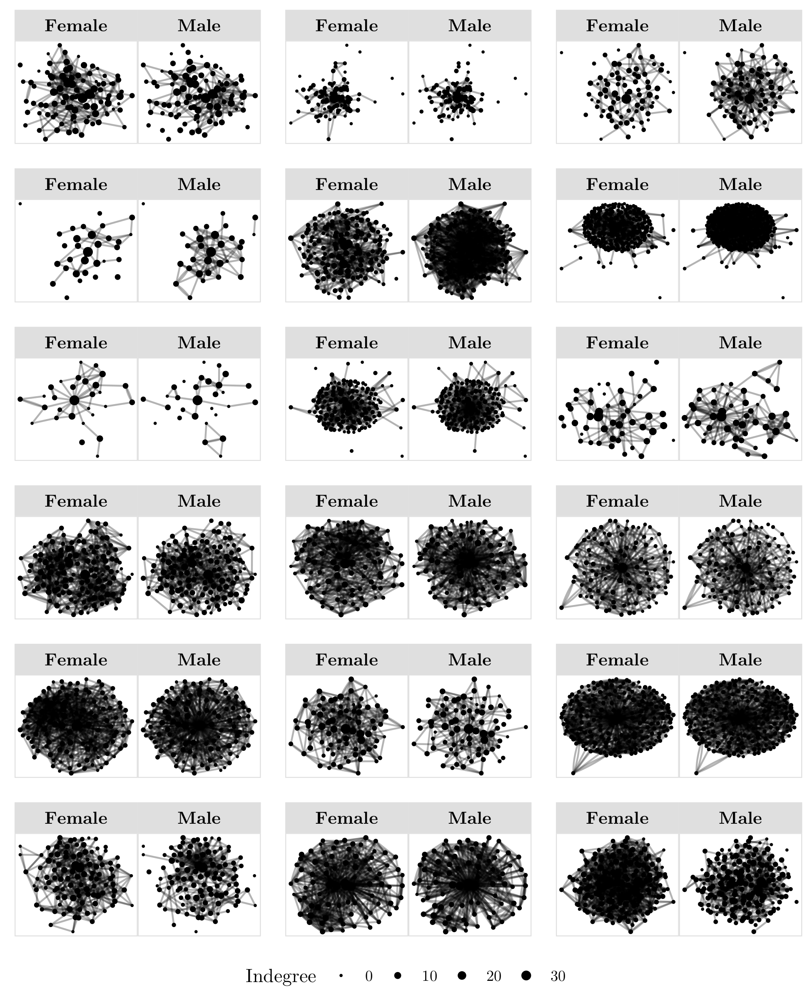
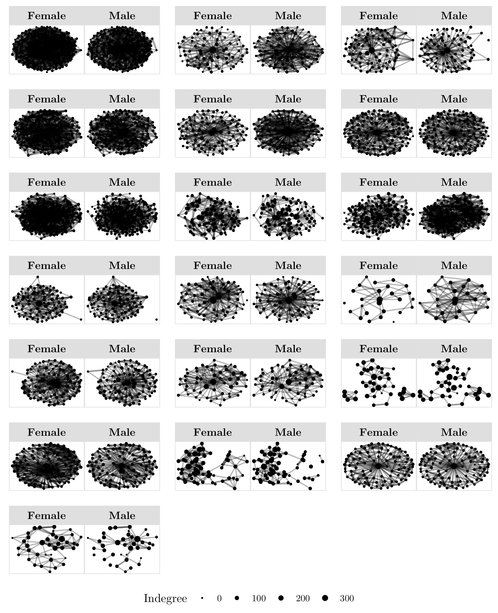
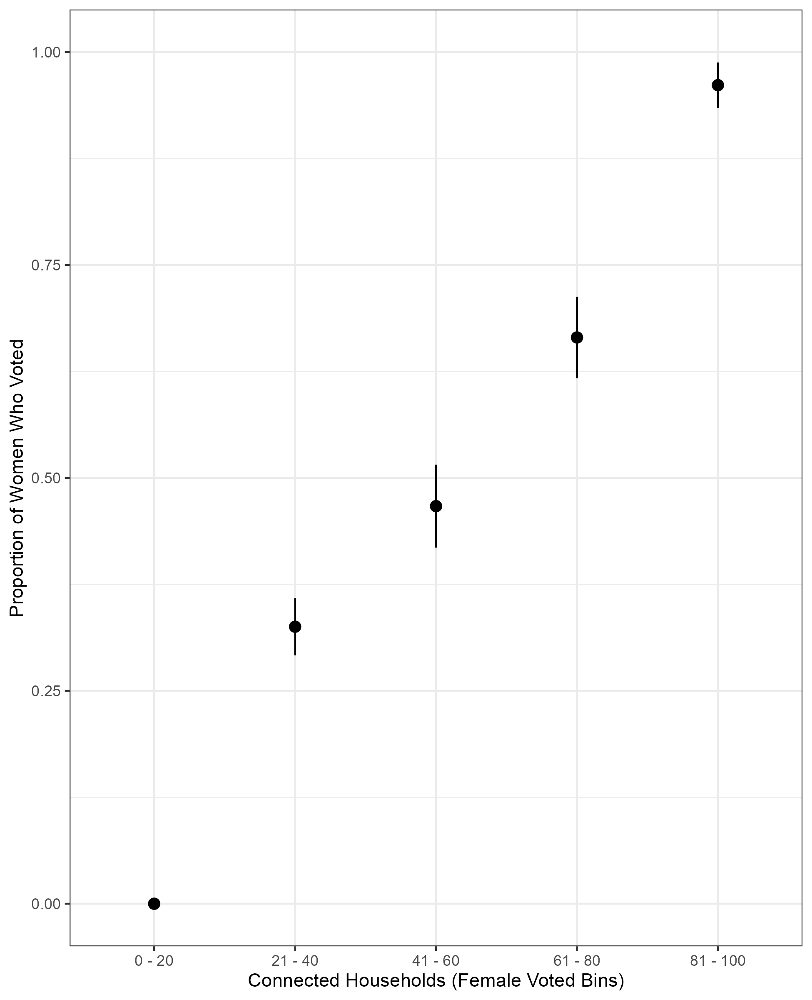

Implementing Partner Report
Rural District Peshawar, Khyber Pakhtunkhwa, Pakistan · March-April 2019
DFCA Research conducted a door-to-door household census and social network survey across 37 rural settlements in District Peshawar. Gender-separated field teams administered paired interviews to both female and male household heads in Pashto, completing structured surveys in 3,738 of 4,892 households in the study area. In addition to measuring personal beliefs and community perceptions around women's political participation, field teams collected directed network nominations from every respondent, producing 74 separate social network maps covering female and male ties across all 37 communities.
Evidence from the Field
Belief trajectory across vantage points
Both men and women in District Peshawar personally hold high support for women's right to vote. As estimates shift to what others believe, perceived support falls dramatically in both groups. The gap between personal beliefs (left) and community perceptions (right) represents the field-documented pessimism wedge measured across 3,738 households.
Observed support levels by domain and belief type
Bars show the percentage of respondents who agreed that women should engage in each form of political participation. Personal beliefs (gold) consistently exceeded women's own estimates of community support (navy) by 15 to 18 percentage points, and men's estimates of community support (slate) by 22 to 32 points. Values from field census, District Peshawar, 2019.
Pessimism wedge distributions by vantage point
Each bar shows the average pessimism wedge — the gap between what a respondent predicts others believe and what others actually believe about women's right to vote (on a 0–10 scale). All four wedges are negative, meaning respondents consistently underestimate actual community support. The magnitude increases sharply when estimating across gender lines: women's estimates of men (C) and men's estimates of other men (D) carry the largest biases. Panel D is the most striking — men dramatically underestimate the degree to which other men support women's right to vote, a textbook case of pluralistic ignorance.
Wedge = predicted support − actual support (0–10 scale). Bars show estimated panel means derived from field histogram data, District Peshawar, 2019.
Field deployment and data collection
Cumulative field activity across the study period, managed by DFCA Research field teams. Separate male and female enumerator teams were deployed simultaneously across settlements throughout the survey window.
Illustrative reconstruction from field evidence. Monthly distribution is estimated from reported totals and known survey dates.
Network Infrastructure
DFCA Research field teams collected directed social network nominations from every male and female household head across all 37 settlements, asking each respondent to name up to five households they engaged with across four types of social ties. This produced 74 separate network maps, one female-nominated and one male-nominated per settlement, with an average of 8.03 ties per household and only 0.49 ties shared between the male and female heads of the same household. The network data informed the academic team's analysis of how social environment shapes women's beliefs about community norms.


Network connectivity and observed voting behavior

The scatter shows that women embedded in female social networks where voting is common were substantially more likely to vote themselves. Women in the lowest connectivity bin showed near-zero turnout; women in the highest connectivity bin showed approximately 93% turnout.
Figure reflects observed voting outcomes linked to field-mapped network data. Exact election cycle confirmed as 2024 general elections.
Field observations
More than 82% of women surveyed personally agreed that women should discuss politics, vote, and run for office. Women's own estimates of how widely that support was shared among other women in their settlement averaged 15 to 18 percentage points lower than the reported reality.
Source: Household census, Table 1. District Peshawar, 2019.Men personally supported women's right to vote at 93.9%, yet estimated that only 58.5% of other men in their community shared that view. The gap between men's personal beliefs and their estimates of other men's beliefs reached as high as 35 percentage points across the three political participation domains.
Source: Household census, Table 1. District Peshawar, 2019.Field mapping found that households maintained an average of 8.03 total social ties. Of these, 3.75 were male-only ties, 3.79 were female-only ties, and only 0.49 were shared between the male and female head of the same household. Women's social environment was largely distinct from that of the men they lived with.
Source: Network nominations, Table 2. District Peshawar, 2019.Women's second-order beliefs about community norms showed near-zero correlation with the personal beliefs of men in their own household (r = -0.02). In contrast, the beliefs held by women in a woman's own social network showed a positive correlation with her community expectations (r = 0.22), and women with higher network centrality formed more accurate beliefs about actual community support levels.
Source: Network analysis, Figure 3 and Appendix D. District Peshawar, 2019.Across all four vantage points, respondents predicted lower support than actually existed — a consistent pessimism wedge. Women's estimates of other women were the closest to reality (mean wedge ≈ −1.5 on a 0–10 scale). Men's estimates of other men were the most distorted (mean wedge ≈ −4.0), meaning men believe their personal support for women's political rights is unusual when in fact it is widely shared. This pattern is consistent with pluralistic ignorance driven by the near-complete segregation of male and female social networks in the study area.
Source: Wedge analysis, field histogram data. District Peshawar, 2019.DFCA Research conducted a complete door-to-door census across 37 rural settlements in District Peshawar over two months in the spring of 2019. Field teams attempted contact at every household in the study area, reaching 4,892 households and completing paired male-female interviews in 3,738 of them. Instruments were administered in Pashto by gender-matched enumerators who conducted male and female interviews separately within each household, preserving the independence of responses. Network mapping was conducted simultaneously, with each respondent nominating up to five social ties across four distinct relationship types spanning family, socialization, community deliberation, and electoral discussion.
"Over 87 percent of women who voted in a rural Pakistan study traveled to the polling station with another woman, not alone."